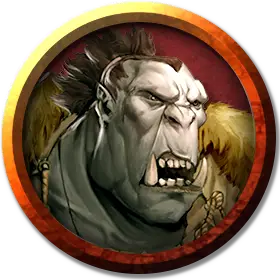

Боевой вождь орков
Orc War Chief
Средний Гуманоид (Орк), хаотично-злой

Класс Доспеха 16 (кольчуга)
Хиты 93 (11к8 + 44)
Скорость 30 футов
| мод | спас | ||
|---|---|---|---|
| СИЛ | 18 | +4 | +6 |
| ЛОВ | 12 | +1 | +1 |
| ТЕЛ | 18 | +4 | +6 |
| мод | спас | ||
|---|---|---|---|
| ИНТ | 11 | +0 | +0 |
| МДР | 11 | +0 | +2 |
| ХАР | 16 | +3 | +3 |
Навыки Запугивание +5
Чувства тёмное зрение 60 футов, пассивное Восприятие 10
Языки Общий, Орочий
Опасность 4 (1100 опыта)
Бонус мастерства +2
Среда обитания Арктика, Болото, Горы, Лес, Луг, Подземье, Холмы
Особенности
Агрессивный. Орк может бонусным действием переместиться на расстояние, не превышающее его скорость, в сторону видимого враждебного существа.
Ярость Груумша. Орк дополнительно наносит 4 (1к8) урона, когда попадает атакой оружием (уже учтено в атаках).
Действия
Мультиатака. Орк совершает две атаки секирой или копьем.
Секира. Рукопашная атака оружием: +6 к попаданию, досягаемость 5 футов, одна цель. Попадание: 15 (1к12 + 4 + 1к8) рубящего урона.
Копье. Рукопашная или дальнобойная атака оружием: +6 к попаданию, досягаемость 5 футов или дистанция 20/60 футов, одна цель. Попадание: 12 (1к6 + 4 плюс 1к8) колющего урона, или 13 (2к8 + 4) колющего урона, если используется двумя руками для совершения рукопашной атаки.
Боевой клич (1/день). Все существа на выбор боевого вождя в пределах 30 футов, слышащие его, и пока не находящиеся под действием Боевого клича, до начала следующего хода боевого вождя совершают броски атаки с преимуществом. После этого боевой вождь может бонусным действием совершить одну атаку.
Описание
Боевой вождь орков это самый сильный и коварный член племени. Его правление длится до тех пор, пока он поддерживает страх и уважение среди членов племени и регулярно удовлетворяет их кровожадность, иначе он будет казаться слабым.
См. дополнительно статью: "Бестиарий: Орки"